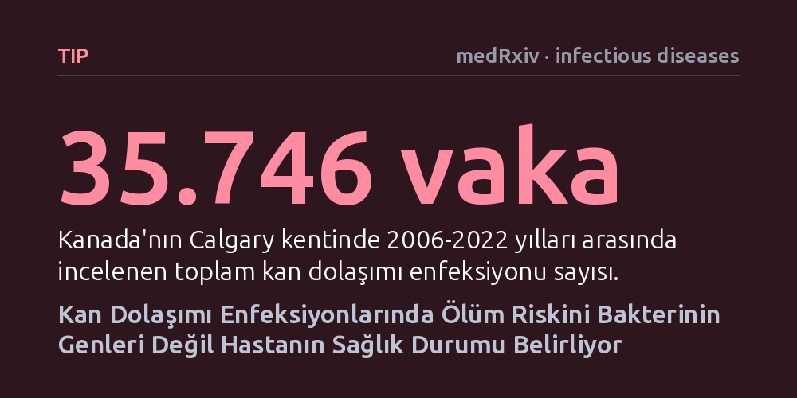

TIP · medRxiv · infectious diseases · 2026-10-12
Kan dolaşımı enfeksiyonlarında mikrobun genetik özelliklerinin ölüm riskine etkisi 35 binden fazla hastada incelendi. Yetmiş binden fazla mikrobiyal gen ve proteine rağmen, ölüm ihtimalini belirleyen temel unsurun bakteriler değil hastanın mevcut sağlık durumu olduğu bulundu.
Enfeksiyonlarda ölüm riskini yalnızca mikrobun saldırganlığına bağlayan yaygın inancın aksine, hayatta kalmayı asıl belirleyen etkenin hastanın kendi biyolojik direnci olduğunu gösteriyor.

Kan dolaşımı enfeksiyonları, mikroorganizmaların doğrudan kana karışarak tüm vücuda yayıldığı ve hayati riskin son derece yüksek olduğu klinik tablolardır. Tıp dünyasında ve toplumda uzun yıllardır kabul gören temel sezgi, hastanın ölüm kalım savaşında mikrobun taşıdığı özelliklerin belirleyici olduğudur. Bakterilerin sahip olduğu virülans genlerinin, ürettikleri toksinlerin ve dokuları istila etme yeteneklerinin hastanın hayatta kalma şansını doğrudan düşürdüğü varsayılıyordu.
Ancak bu varsayım, klinikte karşılaşılan karmaşık gerçekleri açıklamakta yetersiz kalıyordu. Aynı bakteri türüyle enfekte olan iki farklı hastadan birinin kolayca iyileşirken diğerinin hayatını kaybetmesi, ölüm riskinin ne kadarının mikroptan, ne kadarının ise hastanın kendi sağlık durumundan kaynaklandığı sorusunu cevapsız bırakıyordu. Patojenin biyolojik cephanesinin insan ölümündeki gerçek payını belirlemek, hem enfeksiyonla mücadele stratejilerini hem de yeni tedavi arayışlarını kökten değiştirebilecek kritik bir meseledir.
Araştırmacılar bu soruya kapsamlı bir yanıt verebilmek için Kanada'nın Calgary bölgesinde 2006 ile 2022 yılları arasında takip edilen 35.746 kan dolaşımı enfeksiyonu vakasını mercek altına aldı. Bu devasa veri tabanında yalnızca hastaların elektronik sağlık kayıtları incelenmekle kalmadı; enfeksiyona yol açan mikroorganizmaların tüm genom dizilimleri ve nicel protein haritaları da eşzamanlı olarak çıkarıldı.
Araştırma ekibi, hastaların enfeksiyon sonrasındaki 30 günlük ölüm riskini öngörebilmek için gelişmiş makine öğrenimi modelleri tasarladı. İlk adımda modeller yalnızca hastanın yaşı, mevcut kronik hastalıkları ve laboratuvar bulguları gibi klinik sağlık kayıtlarıyla eğitildi. İkinci adımda ise bu algoritmalara mikroorganizmaların 70 binden fazla gen ve protein özelliği dahil edilerek, mikrobiyal verilerin tahmin doğruluğunu artırıp artırmadığı sınandı.
Elde edilen sonuçlar tıp dünyasının yerleşik beklentilerini tersyüz etti. Yalnızca hastanın elektronik sağlık kayıtlarını kullanan makine öğrenimi modeli, 30 günlük ölüm riskini 0,83'lük bir eğri altı alan (AUC) skoruyla oldukça yüksek doğrulukta tahmin etti. Asıl şaşırtıcı olan ise, mikroorganizmalara ait 70 bini aşkın genetik ve proteomik verinin modele eklenmesine rağmen bu tahmin başarısında hiçbir kayda değer artış görülmemesiydi.
Analizler bu durumun biyolojik nedenini de netleştirdi: Bakteriyel özellikler ve virülans faktörleri, aslında hastanın kendi klinik özellikleriyle birlikte kümeleniyordu. Başka bir deyişle, 'daha saldırgan' görünen bakteri özellikleri bağımsız birer ölüm sebebi değildi; genellikle zaten bağışıklığı zayıflamış, ileri yaştaki veya ağır ek hastalıkları bulunan kırılgan hasta gruplarında ortaya çıkıyordu. Sonuç olarak mikrobun özellikleri, bağımsız bir risk faktörü olmaktan ziyade hastanın mevcut zafiyetinin bir yansımasıydı.
Bu bulgular, kan dolaşımı enfeksiyonlarında ölüm kalım dengesini mikrobun saldırganlığından ziyade hastanın genel sağlık durumunun tayin ettiğini ortaya koyuyor. Bugüne kadar patojenin virülans mekanizmalarını hedef alarak geliştirilmeye çalışılan tedavi stratejilerinin, hastanın hayatta kalma oranını artırmada beklenen etkiyi yaratamayabileceği anlaşılıyor. Bu nedenle klinik önceliğin yalnızca mikrobiyal hedeflere değil, hastanın organ fonksiyonlarını desteklemeye ve bağışıklık direncini korumaya verilmesi gerektiği görülüyor.
Öte yandan, çalışmanın sonuçlarını değerlendirirken ihtiyatlı olmakta fayda var. Araştırma henüz bağımsız bilim insanlarının hakem denetiminden geçmemiş bir önbaskı durumundadır ve tek bir bölgeden alınan geriye dönük sağlık kayıtlarına dayanmaktadır. Bulguların farklı ülkelerdeki, farklı genetik arka planlara ve sağlık sistemlerine sahip hasta topluluklarında doğrulanması, bu sonucun evrensel bir ilke haline gelmesi için gereklidir.